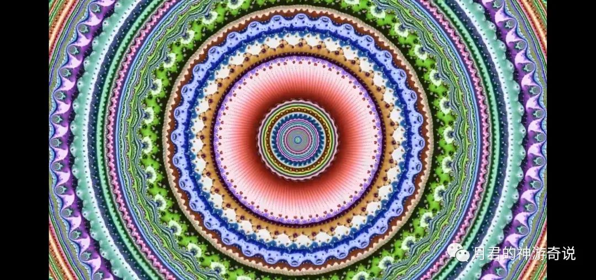
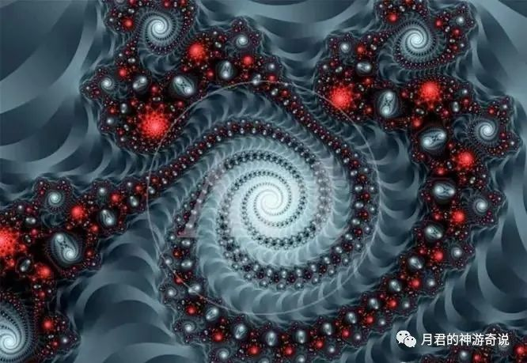

合道7日的经验全分享：人！最怕认识到万物平等！最怕知道自己就是自性圆满的道！
原创 月君 月君的神游奇说 2022-10-20 00:13 发表于北京
原文链接(长) 原文链接(短)
在这一个星期中，无论静心冥想中。还是生活中，都跟万物合一。
与万物合一，随后整个人如变成空气一样，完全消失掉，散开一样。意识融入万物，随后跟万物合一了，感受道。此时看什么都是意识流了，看见什么，就听到他在说话，会动一下。
看见路过的每个人，每个花花草草，心灵感应，都可以听到他们在说话。
每个的东西，都散发着意识和思想。
万物都有生命。
感受的一切，就感受到是我创造分灵一般。另一半。(一体的视角)
我的分身一样。
一物一宇宙，一物一无限分化。
万物合一=存在和不存在的结合。
凡你能认知的，已经存在的。(你认知不了，但已经存在的万物)
你认知不了。不存在的。(创造的可能性和正在创造的万物。还在创造过程的各种可能性。）
存在=已稳定创造
不存在、未知=创造的可能性和正在创造。
什么是无限宇宙？
无限的多元宇宙。
树宇宙，水宇宙，墙壁宇宙，被子宇宙，毛毛虫宇宙，细菌宇宙。
你认知的万事万物都是一个无限大的空间。都是无限宇宙。
都有着如大道一般的神性。
我说的每句话，都是宇宙！
一物一宇宙，无限深广的虚无大道也。
万物皆道，都是大道所化成的。
合道越深，越彻悟。
合道的提升没有止境，而是更深的彻悟，守道而行，永不退转。
我眼中，现在都是无限了。看着自己的手掌，就是一个宇宙在其中！
没有尽头。看见的一切都如全息一样展开。
每个事物都是本源大道，都是一体，平等，没有区别。
每个事物都是无限大。
无内无外，无限大，无限小。
内外都是一，大小都是一。
一个点展开，360°皆是无限可能性。

都是一点，有无限的可能，360°。这个点就是大道，万物的本质。万物的本源。
同时也是自己，自己就是道。感动中。
不用找道，自己就是道，万物合一的时候，你看到什么都是道，都是一点，全部在这里。
看着自己的手，就看到了道！
没有时间空间，只有无始无终的永恒。
境界是自己定义的，概念也是，方式也是，形式也是。
都是人为划分的。
有任何定义和想法，都是在对道的一种解释和说法，和表现形式。
其实道是无限的可能性，有无数种表达、表现方式。
0背后有无数可能。
那一刻，我突然明白了，接收万物的存在，未知，可能性，无限性，接收越多，频率越高。
也就是常说的客观。一个事物，有360°，一亿个人有一亿个客观角度。
接收无限可能性。
比如认为人类根本不可能会飞
但是接收，可能会飞的可能性！频率就扩展了一丝！！
我们做不到，不代表其他物质世界做不到啊，不代表其他高科技做不到啊！
这个就是所谓的全频率。
因为你廉容了无限。也就不执着之前执着的认知了
也就是我执。
不再执着自己认为的。你对一个事物观点角度其实有360°，亿亿万个可能性，亿亿万条路。而不是只有一条路，一个执着点。
当你看到还有无限可能和选择性，执着自动放下。意识开始自由，灵魂开始自由。不再执着所执着的事物，不再执着自己认知的观念。
固执没了。是不是心就平静了？频率范围就广了？
你认为猪只会跑？
我可以说，我看见其他维度的猪，是宇宙创造者，是最大的神，哈哈。
以此类推，一物一宇宙，一物一无限可能性。360°开放，就包含的万物了。
你看见的树，他就是道，你可以透过表象，看到道就在哪里，因为万物链接一体。当你看到万物一体的本质，道就显现了！否则你无法合道成功！你还有区分，还有定义！
所以任何人都可以合道，因为本来就跟道一体，只是因为妄想执着。无法看见自己的本来面目，就是一切的本源！一切的本质！
记住：万物一体，万物平等，万物合一的状态即道。全部归一。
全部都是幻相，这个幻相也是道显化的。
记住！
没有区别和分别，没有定义，每个东西的本质都是那个虚无的样子，都是道，都是同等，平等的。
因为我们都是万物的本源，都是虚无大道。
是我们的起心动念造不一样，所以一事物一无限宇宙，每个事物都有360°无限可能性。

所以你看这个图。每个分出来的，都是360°圈，无论怎么分身，都是360°。
因为创造的每个事物，都是最初大道的样子。都是自相似，都是一体。
都具有大道的神性。众生皆具神性智慧，只是众生不明白。也就是常言的，众生没有醒来的fo，众生皆具如来智慧德相。
都是360°。就是这样，这就是真理。
表象和定义，和认知。
让生命有了定义和区分，其他都是平等，同等。没有区别的。
人人都是fo，众生是没有醒来的fo。因为他们不知道自己也是360°的大道，是无限可能性的虚无大道。是完全自由的灵魂。不生不灭的灵魂。
你看到每个事物，连你穿的臭袜子也是本源，跟你平等。
为什么会频率会掉频，或者得道者投胎以上的大灵魂没有了记忆。
因为又陷入了一个幻，认同了自己另一个变成有我的身份，想不起来自己是无我的，包含一切的虚无，没有回归无我的万物合一，万物一体的意识状态。
假如你梦到了一头猪，把自己当成了猪，就忘记了自己是人。
如庄周梦蝶，把自己当成了蝴蝶，就忘记了自己是庄周。
忘记自己身为无我的道，
一切有形有相。都是自己创造的。
合道中。
大道显化成万物。
有我，创造的一切是为了验证自己的存在。因为自己(道)无始无终，从来不存在。
所以创造另一个我，无穷的我，无限的分身，来验证自己的存在，验证自己的存在性，无限性，可能性。
因为一回归似无的状态，又似乎消失了，于是就成了从未存在，又存在。
有我：观，是破幻，看见万事万物都是幻相。
无我：合一所有幻相，发现自己是一切游戏，一切幻相的创造者，万物的本质，即道也。
天上地下，唯我独尊。
发现自己是一切事物，一切幻相的创造者，一切游戏的主宰，所以才我命由我不由天。
看见的，听见的，摸到的，想到的，认知到的，无论是物质界还是精神界，都是自己创造的。
有我观：破幻，发现都是幻，凡有相，皆虚妄。
无我合一：合万物万相，发现幻都是自己(道）创造的，幻(万物)合一后，就是所谓的道。
道其实就是万物合一的自己，不是别人，不是某个东西。
而是万物合一后，感受的万物本质，那个不生不灭，完全自由，自性圆满意识状态。所以谁也不知道这个什么。
当你日常处于无我的意识状态，看着有我的游戏，也就慢慢稳定觉醒的意识状态，称为彻悟者。
不然就会被洗脑，你是有我的，有限的，你是一个角色，被定义在一个幻相里出不来。
所以要保持合一无我的状态，观有我的一切。知道一切皆我所化，一切皆为自己。
简单而言。24小时观，24小时合道，认知万物皆道，万物皆虚无，都是自己创造的。
观万物，不被万物限制你。不被定义这个不生不灭，完全自由，没有任何定义的你。
有任何念头，认知，概念在试图定义你，都是错误的。道是360°无限的。
完完全全的自由，没有任何定义。
包含：你所处于的角色。你成功的标准，你生活的标准，你喜好的标准，你对错的标准，你当好人坏人的标准，你理想中的标准，你有无论有任何的认知标准，当你去试图绑架身为(道)的你的时候，就完全入幻，变成一个被限制的意识，被一个事物锁在一处空间，无法自由。
再次记住：完完的自由，是没有任何定义。
你觉得我是xx，我也是。但不完全是。
我是360°，我是一颗树，是一个人，是一个蚂蚁，是一个宇宙，是一片天空……
可以是你任何眼中认知低频的。认知高频的。
可以是你任何认知中，想象中，无法想象的任何已知和未知的东西，无论是主观还是客观，还是不存在的，这一切的一切……
每个人同时都是阴阳，都是正负一体，同时是一切的，当你有这个开放的意识，这个心容万物的意识。你才可能进入万物一体，万物合一的全频意识，全一意识状态。
这个才是道！
道就是24小时保持这个状态的意识。99.99%……
刚得道的人，可能只保持了90%以上。
圣人就是认知了这点，曰：人常清净，天地皆归悉。
圣人保持无我合一万物的状态，这个时候的觉察力，就观到万物都是自己创造的，也就不会执着和当真。
有我，无我，来回切换，不执着。
不会入幻太深，演完戏，瞬间出戏，出来了。
即：不执着自己体验的一切
没有觉醒的人，是因为会忘记自己本来是道，是一切游戏创造者的记忆频率，陷入种种创造的幻相中。
合道，是忆起自己是不生不灭，完全自由的道。
因为频率是有波动的。不是永恒的，24小时都保持，训练修心，静观能力，合一能力。破幻能力，就是所谓的频率稳定。提升频率。
1，观，破所有相，妄想执着，都是幻相。
2，合万物，发现所有相都是自己(道）创造的，从而看到万物的本质。从而破除妄想执着。
修行，总结，只有两步。
不着任何相，任何相都是你。
维度，境界，标准，认知，概念，规则，法则，你认知到的。认知不到的，也都是虚构的东西。你是自由的！
跳出三界，不在五行之中！绝对的自由！
360°的自由自在，跳出任意体验，任意万物。
完全的自由意识，完全的自由灵魂，即如同等大道的意识一样纯净。
再重复一次：完全自由的意识，完全自由的灵魂，没有任何定义和认知限制，彻底解放你自己的意识，你将走到彼岸！同等大道的意识纯净，可得死后不受轮回之苦，解脱也！
本文章全为合一中，心定中，本人亲自体验，亲眼所见，无任何理论。
记录完毕……